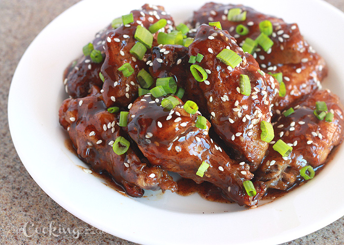
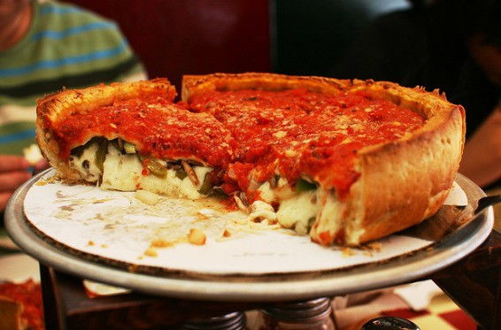
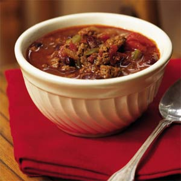

Here we show how to make the tastiest chemistry
- You need a kitchen
- Be organized
- follow the right steps
Recipes
Honey-Balsamic Chicken

From allrecipes.com
Ingredients
- 1/4 cup balsamic vinegar
- 1/4 cup olive oil
- 1/4 cup honey
- 1/2 teaspoon dried thyme
- 1/2 teaspoon dried rosemary
- 2 pounds bone-in chicken thighs, or more to taste
- salt and pepper to taste
How to make
- Beat balsamic vinegar, olive oil, honey, thyme, and rosemary together in a bowl until smooth; pour marinade into a resealable plastic bag.
- Season chicken thighs with salt and black pepper; add to marinade in plastic bag. Squeeze bag to remove air and seal. Marinate chicken in refrigerator for 2 to 8 hours.
- Preheat oven to 375 degrees F (190 degrees C).
- Pour chicken and marinade into a baking dish.
- Bake chicken in preheated oven until no longer pink at the bone and the juices run clear, 35 to 40 minutes. An instant-read thermometer inserted near the bone should read 165 degrees F (74 degrees C).
Good Old Fashioned Pancakes
From allrecipes.com
Ingredients
- 1 1/2 cups all-purpose flour
- 3 1/2 teaspoons baking powder
- 1 teaspoon salt
- 1 tablespoon white sugar
- 1 1/4 cups milk
- 1 egg
How to make
- In a large bowl, sift together the flour, baking powder, salt and sugar. Make a well in the center and pour in the milk, egg and melted butter; mix until smooth.
- Heat a lightly oiled griddle or frying pan over medium high heat. Pour or scoop the batter onto the griddle, using approximately 1/4 cup for each pancake. Brown on both sides and serve hot.
Deep-Dish Pizza

From www.cooks.com
Ingredients
Pasta
- 1 pkg. active dry yeast
- 1 c. warm water (105 to 115 degrees)
- 1 tsp. sugar
- 1 tsp. salt
- 2 tbsp. oil
- 2 1/4 c. flour
- 1/4 c. corn meal
Topping
- 1 lb. hamburger
- 16 oz. can whole tomatoes, drained
- 1 tbsp. minced onion
- 1 tsp. oregano
- 1/2 tsp. salt
- 1/8 tsp. garlic powder
- 1 sm. green pepper, cut into thin strips
- 4 oz. can mushrooms, drained
- 1 c. shredded mozzarella cheese
How to make
Pasta
- Dissolve yeast in warm water;
- Stir in remaining ingredients;
- Beat vigorously 20 strokes.
- Let rest about 5 minutes.
Topping
- Cook and stir hamburger until light brown;
- drain.
- Prepare dough.
- Mix together onions, oregano, salt, pepper and garlic powder;
- break up tomatoes with fork.
- Press dough evenly on bottom and halfway up sides of greased baking dish 13 x 9 x 2 inch.
- Sprinkle meat over dough.
- Spoon sauce onto meat, top with green peppers, mushroom and cheese.
- Cook at 425 degrees until cheese is light brown.
Venison Chili

From www.cooks.com
Ingredients
- 2 lb. ground venison
- 2 qt. stewed tomatoes
- 1 can tomato soup
- 1 (16 oz.) can chili beans in sauce
- 1 (8 oz.) can kidney beans, drained
- 1 lg. onion, chopped
- 1 stalk celery, diced
- 2 tsp. chili powder (optional)
- 1 tbsp. butter
How to make
- Cook ground venison with onion and butter - venison has little fat do not drain.
- Add stewed tomatoes, soup, celery and chili powder until celery is nearly tender.
- Add chili beans and kidney beans, cook until celery is tender and serve.